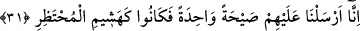

Denilir ki o yavruyu da öldürdüler ve bundan üç gün sonra Semûd kavmi üzerine azap
indi.”
30. (Bu azgınlara) azabım ve uyarılarım nasıl oldu?
Âd kavmi kıssası başında 18. âyet-i kerîme’de yapılan açıklamanın aynıdır. (Oraya
bakılsın!)
31. Biz onların üzerlerine korkunç bir ses gönderdik. Hemen hayvan ağılına
konan kuru ot gibi oluverdiler.
“Biz onların üzerine korkunç bir ses gönderdik.” Bu ses, Cebrâîl (a.s.)’ın sesi idi.
Bu onların suçlarına denk düşen bir cezâdır. Çünkü onlar, anasını öldürerek çocuğun
çığlık koparmasına sebep olmuşlardı. Hadis-i şerifte de, esirler arasında bulunan ananın
çocuğundan ayrılması sonucu üzüntüden şaşkına dönen ananın acıklı durumu üzerine
söylenmiş “Ana çocuğundan ayrılmasın ki, şaşkına dönmesin” buyrulmuştur.[150] Bir
başka hadis-i şerifte, “Kim ana ile çocuğu arasını ayırırsa, Allah kıyâmet gününde
onunla sevdiklerinin arasını ayırır” buyrulmuştur.[151] Sehâvî’nin el-Mekâsidü’l-
hasene adlı eserinde böyle ifâde edilmiştir.
Huzurlu ve mutlu bir hayat yaşarlarken bu kuvvetli ses nedeniyle ağılcının topladığı
kuru ot gibi kırılıp döküldüler. Âyet-i kerîmedeki “heşm”in anlamı, ot gibi yumuşak ve
basit bir şeyi kırmaktan ibarettir. “Heşîm”, “ağaç ve diğer şeylerden ufalanan
çörçöptür.” “Hazr,” ağılda bir şeyi biriktirmektir. “Mahzur”, sakıncalı ve yasak olan
şeydir. “Muhtazır,” ağıl yapan kimse demektir.
Cevherî demiştir ki, “hazire,” develeri rüzgar ve soğuktan korumak için yapılan
ağıldır. Buna göre âyet-i kerîmenin mânâsı, şöyle olur: “Onlar, ağıl yapan kimsenin
edindiği ağaç gibi veya ağıl sâhibinin kışın hayvanları için topladığı kuru ot gibi kırılıp
döküldüler.”
32. Andolsun biz Kur’ân’ı, anlaşılıp öğüt alınması için kolaylaştırdık. O halde
düşünüp öğüt alan yok mu?